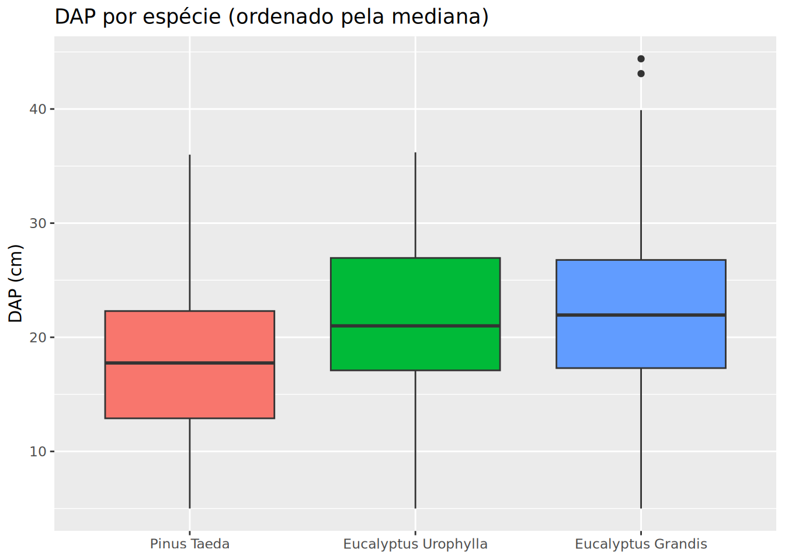
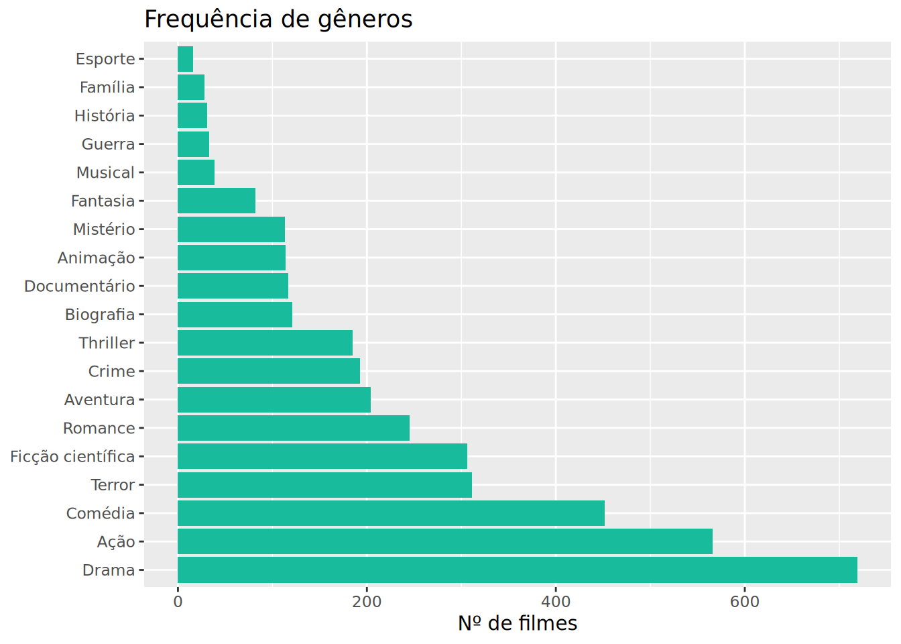
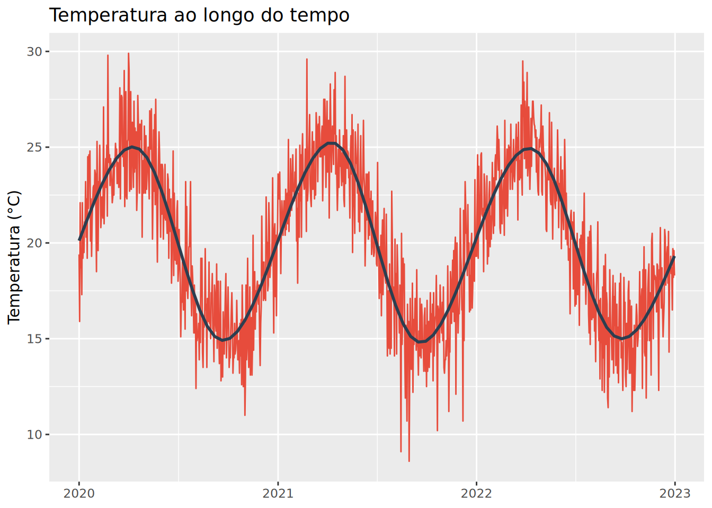

# A tibble: 2 × 2
tem_the n
<lgl> <int>
1 FALSE 3082
2 TRUE 793Dia 3 — Manhã
Dia 3 — Manhã | 4 horas
Objetivos
Ao final deste capítulo, você será capaz de:
- Manipular texto com
stringr(buscar, extrair, substituir) - Trabalhar com fatores usando
forcats(reordenar, agrupar) - Lidar com datas usando
lubridate(parse, extrair, calcular intervalos)
Manipulação de texto com stringr
Dados reais vêm sujos: espaços extras, maiúsculas inconsistentes, padrões que precisam ser extraídos. O pacote stringr resolve isso.
Detectar e contar padrões
Extrair e substituir
[1] "2023"[1] "E. grandis"Limpeza de texto
[1] "Eucalyptus Grandis" "Pinus Taeda" "Eucalyptus Urophylla"# A tibble: 3 × 2
especie_limpa n
<chr> <int>
1 Eucalyptus Grandis 682
2 Eucalyptus Urophylla 99
3 Pinus Taeda 350Fatores com forcats
Fatores são variáveis categóricas. O pacote forcats ajuda a reordená-los e agrupá-los — essencial para gráficos e modelos.
Reordenar por outra variável
# Ordenar espécies por DAP médio (útil para gráficos)
inv_florestal %>%
mutate(especie = fct_reorder(especie, dap, .fun = median)) %>%
ggplot(aes(x = especie, y = dap, fill = especie)) +
geom_boxplot() +
labs(x = NULL, y = "DAP (cm)", title = "DAP por espécie (ordenado pela mediana)") +
theme(legend.position = "none")
Agrupar categorias raras
# A tibble: 6 × 2
genero_agrupado n
<fct> <int>
1 Other 1521
2 Drama 719
3 Ação 566
4 Comédia 452
5 Terror 311
6 Ficção científica 306Ordenar por frequência

Datas com lubridate
Lidar com datas no R sempre foi doloroso — até o lubridate. Ele transforma texto em data com funções intuitivas.
Parse de datas
[1] "2023-03-15"[1] "2023-03-15"[1] "2023-03-15"[1] "2023-03-15"Extrair componentes
[1] 2023[1] 3[1] Mar
12 Levels: Jan < Feb < Mar < Apr < May < Jun < Jul < Aug < Sep < ... < Dec[1] Wed
Levels: Sun < Mon < Tue < Wed < Thu < Fri < Sat[1] 1[1] 1Aritmética com datas
[1] "2023-04-14"[1] "2023-09-15"[1] "2024-03-15"[1] 5.832877Exemplo prático: dados climáticos
# A tibble: 12 × 3
mes temp_media precip_total
<ord> <dbl> <dbl>
1 January 21.7 681.
2 February 23.2 860.
3 March 24.7 886.
4 April 25.1 942.
5 May 23.7 977.
6 June 21.5 662.
7 July 18.5 556.
8 August 16.0 359.
9 September 15.5 346.
10 October 15.2 305.
11 November 16.3 390.
12 December 18.7 593.
Exercícios
Exercício 1
Na coluna especie do inv_florestal, quantos registros contêm “Eucalyptus” no nome?
Resultado esperado:
[1] 664Exercício 2
Padronize os nomes das espécies removendo espaços extras e convertendo para maiúsculas (título).
Resultado esperado:
[1] "Eucalyptus Grandis" "Pinus Taeda"Exercício 3
Agrupe as espécies com menos de 100 árvores como “Outras”. Conte a frequência.
Resultado esperado:
# A tibble: 3 × 2
especie_agrupada n
<fct> <int>
1 Eucalyptus Grandis 664
2 Pinus Taeda 282
3 Outras 46Exercício 4
No dataset clima.xlsx, parse a coluna de data e calcule a temperatura média por mês (ordenada de janeiro a dezembro).
Resultado esperado:
# A tibble: 12 × 2
mes temp_media
<ord> <dbl>
1 janeiro 24.5
2 fevereiro 24.2
3 março 23.1
...
12 dezembro 24.8Exercício 5
Usando os dados de clima, crie um gráfico de barras da precipitação total por mês.
Resultado esperado:
Gráfico com 12 barras azuis, maior precipitação no verão (dez-jan).
Exercício 6
Parse a data "15/05/2017" e calcule quantos anos se passaram até hoje.
Resultado esperado:
[1] 9.04(O valor exato depende da data atual.)